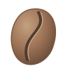
Arabica
Most specialty coffee comes from Arabica. It usually has more aroma, acidity, sweetness, and origin clarity.
Origin library
Find an origin and flavor that sounds like you.
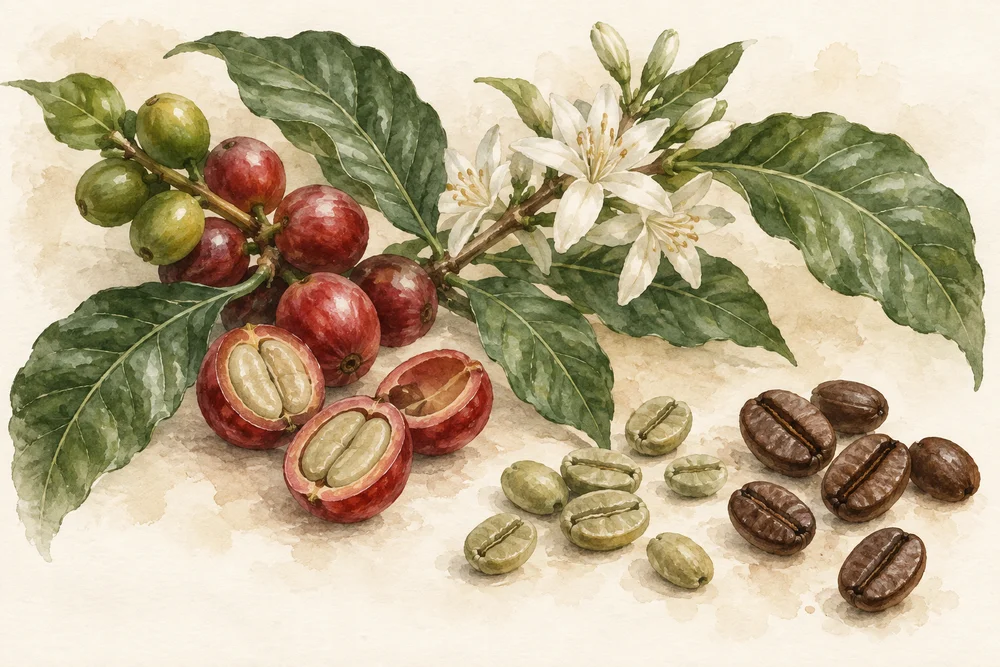

Most specialty coffee comes from Arabica. It usually has more aroma, acidity, sweetness, and origin clarity.
Robusta is stronger, more bitter, higher in caffeine, and prized for body and crema in espresso blends.
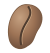
Liberica has large beans and a bold, unusual profile that can taste woody, smoky, fruity, and floral.
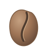
Excelsa is commonly treated as a Liberica variety, known for tart fruit, depth, and a distinctive finish.
Bean illustrations are examples, not to scale. Rare: Stenophylla · Hybrid: Catimor.
No beans match these filters. Try another flavor or reset your choices.
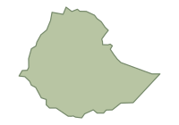
Born from ancient arabica forests, Ethiopian heirloom coffee carries a wild, floral identity shaped by small farms and careful drying beds.
Tasting notes
Jasmine, bergamot, lemon zest, peach, black tea.
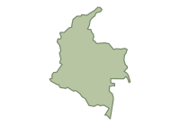
This variety is grown on steep Andean slopes where family farms wash and ferment cherries for clarity, sweetness, and balance.
Tasting notes
Red apple, caramel, orange peel, panela, milk chocolate.
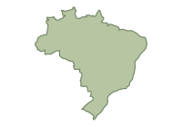
Slow sun-drying on wide patios gives Brazilian bourbon a dessert-like comfort, making it a favorite foundation for espresso blends.
Tasting notes
Hazelnut, cocoa, brown sugar, dried cherry, toasted almond.
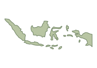
Wet-hulled processing and humid mountain farms create a dense, savory coffee with a deep character and a long, spicy finish.
Tasting notes
Dark chocolate, cedar, baking spice, tobacco leaf, molasses.
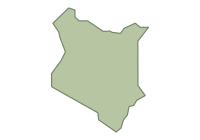
Selected for drought resistance and cup quality, SL28 became one of Kenya's most recognizable coffees through cooperative washing stations and meticulous sorting.
Tasting notes
Blackcurrant, grapefruit, tomato leaf, cane sugar, hibiscus.
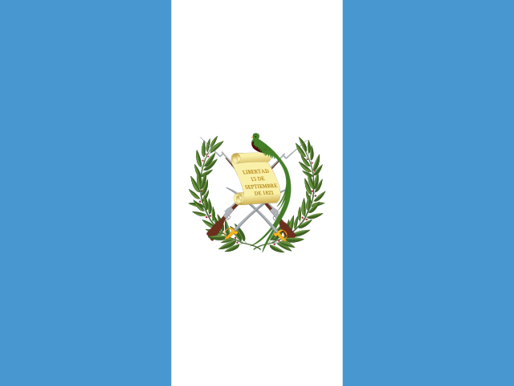
GuatemalaAntigua valleyAntigua coffee grows between volcanoes, where cool nights and mineral-rich soil create a steady sweetness that works beautifully as a daily cup.
Tasting notes
Cocoa, orange, spice, brown sugar, roasted almond.
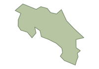
Tarrazu producers are known for precise milling and honey processing, creating coffees that bridge crisp fruit and rounded sweetness.
Tasting notes
Orange blossom, honey, green apple, vanilla, nougat.
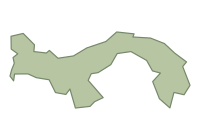
Geisha became famous in Panama for its perfume-like aromatics and delicate structure, especially from high farms near cloud forest conditions.
Tasting notes
Jasmine, mango, lime, bergamot, honey.
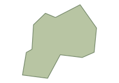
Rwandan bourbon is often processed through community washing stations, giving smallholder harvests a clean and polished fruit character.
Tasting notes
Red currant, mandarin, black tea, honey, clove.
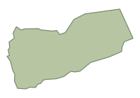
One of coffee's oldest trade identities, Yemen Mocha is shaped by terraced mountain farms, dry processing, and intensely concentrated cherries.
Tasting notes
Cacao nib, dried fig, cardamom, raisin, red wine.
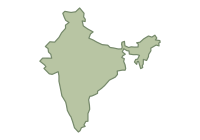
Exposed to humid monsoon winds after harvest, this Indian coffee becomes pale, low-acid, and unusually heavy in the cup.
Tasting notes
Walnut, leather, cedar, malt, dark cocoa.
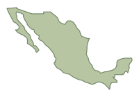
Chiapas coffees often come from small farms near forested highlands, offering a soft, approachable profile for everyday brewing.
Tasting notes
Milk chocolate, pear, cinnamon, toasted sugar, citrus.
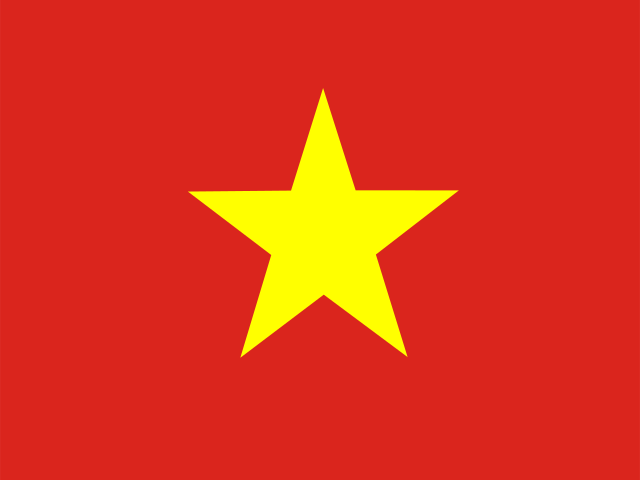
VietnamCentral HighlandsRobusta is central to Vietnam's coffee culture, thriving in warmer lowland farms and bringing the strong base used for phin coffee and espresso crema.
Tasting notes
Dark chocolate, roasted peanut, molasses, malt, bitter cocoa.
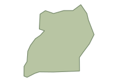
Uganda is part of Robusta's natural home, where hardy coffee trees produce dense beans that can add structure and punch to blends.
Tasting notes
Walnut, cacao, brown sugar, black pepper, toasted grain.
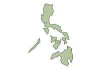
Barako is a beloved Liberica identity in the Philippines, known for large beans, powerful aroma, and a taste that stands apart from typical Arabica.
Tasting notes
Jackfruit, smoke, dark sugar, spice, toasted wood.
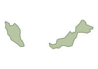
Liberica has deep roots in Malaysia, especially in farms that value its resilience, large leaves, and unusually fragrant cup character.
Tasting notes
Ripe banana, palm sugar, cedar, cacao, floral spice.
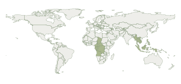
Excelsa is often classified as a Liberica variety, but roasters treat it separately because it brings tart fruit and a layered finish.
Tasting notes
Tamarind, dark berry, cocoa husk, spice, dried fruit.
Stenophylla is a rare West African coffee species gaining attention for climate resilience and a cup quality that can resemble fine Arabica.
Tasting notes
Peach, elderflower, citrus, honey, black tea.
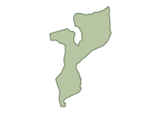
Racemosa is a low-caffeine wild coffee species from southern Africa, more often seen in research and specialty experiments than everyday cafes.
Tasting notes
Herbs, raisin, tea, soft citrus, toasted grain.
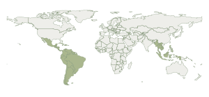
Catimor families combine Arabica cup potential with Robusta-related disease resistance, making them important in farms facing leaf rust pressure.
Tasting notes
Chocolate, citrus, brown sugar, mild herbs, roasted nuts.